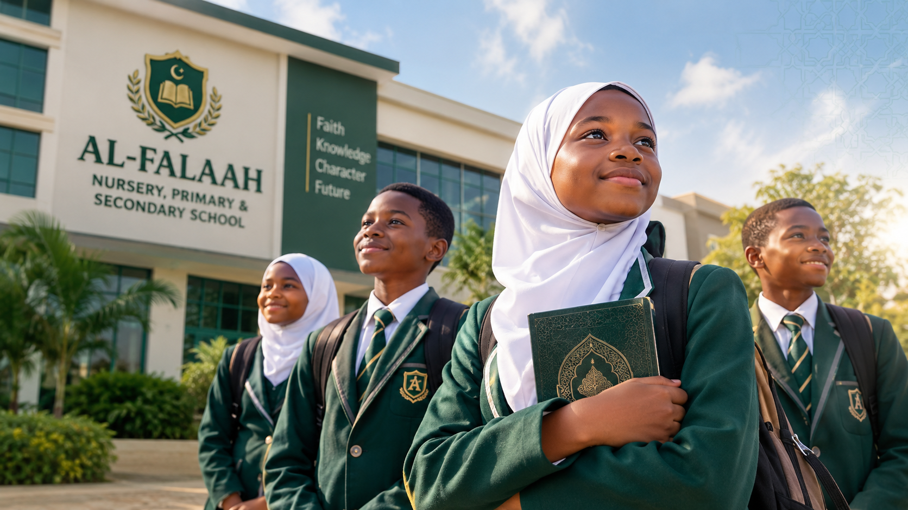
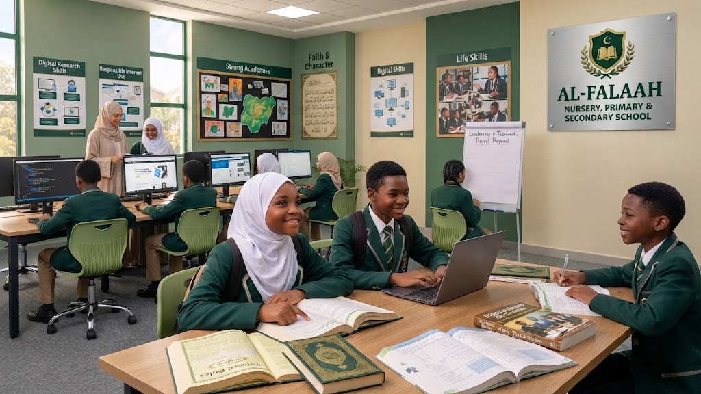

Islamic Education
A strong grounding in deen and good character, beyond simple lessons.
- Qur'an reading & memorisation
- Tajweed & carefully taught adab
- Aqeedah, Fiqh & Seerah
- Islamic history & daily practice
Al-Falaah School combines Qur’anic values, academic excellence, and modern skills to build faith, knowledge, and character in every child.

Education should go beyond passing examinations. We believe a child needs sound academics, a strong Islamic foundation, practical digital skills and the confidence to succeed in life. That is what we build here — all within one learning environment.
Every child at Al-Falaah develops across four connected pillars — faith, knowledge, technology and character form one complete education.
A strong grounding in deen and good character, beyond simple lessons.
Strong conventional education based on the Nigerian curriculum.
Technology taught productively, responsibly and creatively.
Personal and interpersonal skills that prepare children for the real world.
We are not simply an Islamic school that teaches the conventional curriculum. A student at Al-Falaah is guided progressively through a sequence of outcomes — from faith to responsible citizenship.
Explore what each level offers. All levels combine Islamic education, academics, digital literacy and soft-skills development.
Play-based learning where little Muslims begin Qur'an, phonics and social play.
Pre-school readiness with structured literacy, numeracy and Islamic foundations.
A nurturing environment where your child's love for learning begins — guided by qualified, caring teachers.
Enrol for NurseryBuilding strong reading, writing and numeracy foundations in a happy classroom.
Deeper subjects and study habits with growing confidence and independence.
Focused examination preparation for a smooth, confident transition to secondary.
The primary years build the reading, maths and character habits children carry into secondary — and beyond.
Enrol for PrimaryA broad foundation across sciences, arts and vocational subjects.
Science, Arts and Commercial streams with exam-ready teaching.
Intensive preparation for public examinations and life after school.
A broad, exam-ready pathway with structured mentoring to excel in WAEC / NECO and thrive after school.
Enrol for SecondaryA child at Al-Falaah learns how to use technology productively, creatively and responsibly — and develops the personal skills needed to thrive in the real world.

“To nurture knowledgeable, morally upright, digitally literate and confident young people who are prepared to positively contribute to their families, communities and society.”
“To provide quality academic and Islamic education while equipping students with digital literacy, practical soft skills and strong character for lifelong learning and responsible living.”
Happy Students
Dedicated Staff
Classes & Levels
Years of Excellence
Admission is open for the new session. Spots are limited — join a school that prepares children for the examinations of life, not just the next test.
Can't find what you're looking for? Reach us on WhatsApp or through the contact page.